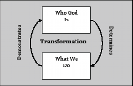

|  |
When we let God transform us, when we wear His name at the core of our being, who God is begins to determine our actions. The closer we get to Him, the more our actions and relationships reflect His character. On the other side of this circle of transformation, we find that when our lives begin to show the changes God is making in our hearts, other people notice. If we are true to the God whose nature is determining our actions, people will not look at us but through us to the God behind our transformation.
Read Matthew 5:14-16. Who will people praise when they see our good deeds?
Notice that it doesn’t say people will see our good deeds and praise us. It says that they will see our good deeds and praise our Father. When we allow God to transform us, what we do bears witness to God’s character, witnessing to the work He is doing in us and drawing others to Him.
That is exactly what happened in the lives of Daniel, Hananiah, Mishael, and Azariah. The character of these men pointed people to honor God, not them. It’s amazing to read about the murderous, idolatrous kings of Babylon changing their tune and worshipping God when they saw Him at work in Daniel’s and his friends’ lives. Even though in these particular instances Daniel and his friends were promoted and their own lives benefitted, the true outcome of their actions was to build up God’s name, not their own.
Psalm 23:3 says: “He leads me in paths of righteousness for his name’s sake” (ESV). When we walk in paths of righteousness, when we act and treat others in ways that reflect God’s character, it’s His name, not our own, that is lifted up. This is the exact opposite of the actions at the Tower of Babel, where people were working to make a name for themselves. When we allow God to transform us, we act in order to call attention to God; we live for His name’s sake, not our own.
It’s sobering to think that our own actions affect God’s credibility—that,
like celebrities endorsing a product, people see us as “the face” of the faith we
proclaim. When we live the way Christ lived, people see His nature reflected in our